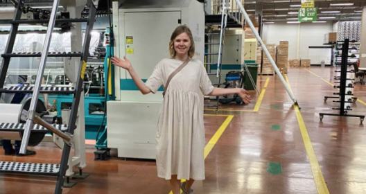

Как выбрать товар для входа
Маркет очень быстро меняется. Буквально каждый квартал меняются условия работы и инструменты для продвижения. Рассказываем о тех, которые существуют на момент работы над статьей.
Интеграция с рекламной площадкой «Яндекс.Директ». Этот инструмент позволяет настраивать рекламу в Яндекс.Директе: с ней карточка товара будет видна любому пользователю, кто ищет ваш товар через поиск.
Площадка компенсирует до 100% затрат магазина на рекламу в Яндекс.Директе или 10% оборота на маркетплейсе, возвращает маркетплейс меньшую из сумм.
Деньги, которые площадка вернет продавцу в виде бонусов, можно использовать на рекламу снова. Вывести их на счет в виде живых денег нельзя.
Редкий теплый день в Арктике. Обычно надо сидеть в балке́, это крытая красная повозка позади меня. В ней места немного, и у каждого своя работа. Бывает, страшно задеть чей-то проводок. А когда удается поработать на улице, можно расслабитьсяИсточник: Е.И. Буковецкий, «Фотограф-любитель»
И наоборот: если товар очень популярный, у него 3000–4000 продаж и больше 150 отзывов, новичку будет сложно с ним конкурировать. Придется назначать цену ниже и много вкладывать в рекламу.
Поставщиком может стать:
- с высоким спросом;
- у которых 50—100 отзывов;
- у которых маржинальность выше 100%;
- небольшого веса и объема, единого размера.
Преимущества Wildberries
Легко стать поставщиком. Нужно зарегистрироваться на сайте для партнеров, заполнить анкету, подписать оферту и оформить карточку товара. После этого товар сразу попадает на витрину.
Проработанная система доставки. У Wildberries 13 складов в разных регионах России, поставщик может выбрать тот, куда ему удобно отгружать товар. Московские компании могут хранить товар в Коледино, сибирские — в Новосибирске, уральские — в Екатеринбурге.
Wildberries — международный маркетплейс одежды, обуви, электроники, детских товаров, товаров для дома и других товаров.У маркетплейса 115 000 пунктов выдачи и постаматов, более 5000 курьеров, поэтому товар быстро доставят покупателю.
Мощная реклама и большая аудитория. Продавцу не нужно вкладывать деньги в продвижение площадки, Wildberries сам привлекает клиентов. Маркетплейс проводит рекламные кампании в СМИ и соцсетях, привлекает покупателей акциями и скидками. Благодаря этому на сайт Wildberries ежедневно заходят больше 11,5 млн человек.
Читайте личный опыт предпринимателей
На запах кухни приходят медведи, а песцы разворовывают запасы еды
Мы помогаем МГУ организовывать практику и ;вывозим студентов изучать мерзлоту. Ребята, которые приехали учиться из центральных или из южных регионов, только теоретически могут представить себе, что это такое. Но они не почувствуют, что значит холод и пурга, пока сами не увидят их.
В организацию практики студентов мы вкладываем до 10% от оборота. Сами на этом не зарабатываем, просто радуемся, что можем показать им настоящую работу.
 «Обманулась, но смогла выбрать фабрику»: вторая серия реалити-шоу
У студентов есть два варианта практики — производственная и учебная. На производственной практике — работа с настоящим заказом. Например, есть задание — отбирать образцы грунта, упаковывать их, делать этикетки. За выполнение студент получает оплату.
А учебная практика проходит так: сначала студенты приезжают на участок работ, который им заранее «подготовили» преподаватели, все осматривают. Потом получают приборы, чтобы делать замеры, и в конце дня составляют свою карту. На карте нужно указать, где, по их мнению, льды, где мерзлые и талые породы, где пески или глины. По итогам практики эту карту нужно будет защитить перед преподавателями.
«Я фотографирую все изделия сам. Не пользуюсь услугами предметного фотографа. Фотографировать шелк сложно: надо передать текстуру и блики света. Обычно конкуренты снимают шелковые изделия на девушках — так проще показать товар. Но мне кажется, что люди и посторонние предметы в кадре отвлекают от товара. Поэтому предпочитаю снимать изделия на белом фоне без лишних деталей.
Несомненно, на модели проще показать, как использовать товар. Но мы планируем выкладывать видео по использованию наших изделий. Например, как правильно надевать чалму на голову. Так мы не отойдем от концепции фотографий и поможем покупателю пользоваться товаром правильно»
Кирилл Пургин Основатель бренда
Часть наших сотрудников преподают в МГУ. Лекции можем вести прямо из экспедиции, обычно из рубки нашего судна. Если один из нас занят, его подменят. Например, сейчас моя очередь работать на льду, я выхожу на смену, а мои лекции читает наш главный геолог, Алексей Гунар.
В районах, где есть интернет, общаемся со студентами по Zoom. Но, конечно, это не везде возможно, поэтому в следующих поездках планируем работать со спутниковой связью VSAT. Обещают стабильную работу.